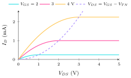

in triode and
in triode and  in saturation, with ; the source–bulk voltage raises
in saturation, with ; the source–bulk voltage raises  (body effect).
(body effect).Physics
Increasing : accumulation → depletion → strong inversion when the surface potential reaches , . Threshold — the last term grows with : body effect , .
Derivation (gradual channel)
Channel charge per area at position : (Shockley 1952). Drift current . Integrate from  (source) to (drain) over length
(source) to (drain) over length  :
:
Regions (NMOS; PMOS with all signs reversed)
| region | condition | I_D |
|---|---|---|
| cutoff | V_GS ≤ V_TN | 0 (subthreshold leakage) |
| triode | V_GS > V_TN and V_DS < V_GS − V_TN | Kn(V_GS − V_TN − V_DS/2)V_DS |
| saturation | V_GS > V_TN and V_DS ≥ V_GS − V_TN | (Kn/2)(V_GS − V_TN)²(1 + λV_DS) |
Small-signal: , . For small : .
Picture

mA/V², V; dashed: boundary between triode and saturation.
Worked example
Two NMOS in series as an inverter with saturated load: mA/V² for both,  V,
V,  V, V,
V, V,  . Load saturated (), switch in triode: V (4 V violates triode), mA. With
. Load saturated (), switch in triode: V (4 V violates triode), mA. With  ,
,  V, the load threshold rises with and
V, the load threshold rises with and  drops to ≈ 1.65 V (solve numerically): see NMOS inverters.
drops to ≈ 1.65 V (solve numerically): see NMOS inverters.
Engineering applications
All digital CMOS, analog amplifiers (current mirrors, differential pairs), power MOSFETs (power devices), image sensors, flash memory (floating gate shifts  ).
).
Pitfall
The saturation condition is on and : . A diode-connected MOS () is always saturated when on — use it to shortcut exam problems.